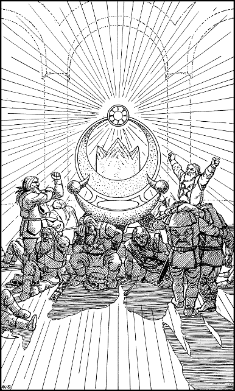

190
Upon entering the chamber, you see a huge throne of silver adorned with hundreds of precious gems. It rests upon a dais of marble and it dominates the centre of this circular hall. A halo of golden light surrounds the Throne of Andarin, and when these rays wash over your body, you feel cleansed and invigorated (restore 5 ENDURANCE points).
As you approach the fabled throne, you see many injured Drodarin warriors seated around its base. Some have suffered grievous battle-wounds, yet the goodly light of the throne is healing their torn flesh and broken bones. Your grey-bearded escort ushers you to a corner of the chamber where two warriors are engaged in a heated debate. From the colour of their armour and the royal crests of Bor emblazoned upon their surcoats, you deduce that they are King Ryvin’s missing sons: Prince Leomin and Prince Torfan.

The two princes cease their argument when they see you approach. Torfan comes bounding forward to greet you, offering his hand in friendship, yet his elder brother appears sullen and dejected. You introduce yourself to the princes and give an account of the events that have brought you to this meeting. When you show them the Sun-crystal and tell of your mission to destroy Shom’zaa, a glimmer of hope shines in Prince Leomin’s red-rimmed eyes. You sense that he has been racked with remorse since the escape of Shom’zaa and its vile minions. He longs for the chance to redeem his foolish actions, and readily he offers to help you destroy the creature and its hordes.